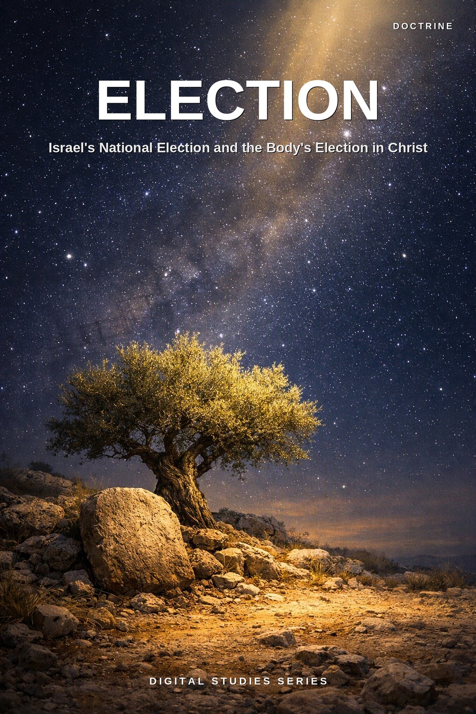
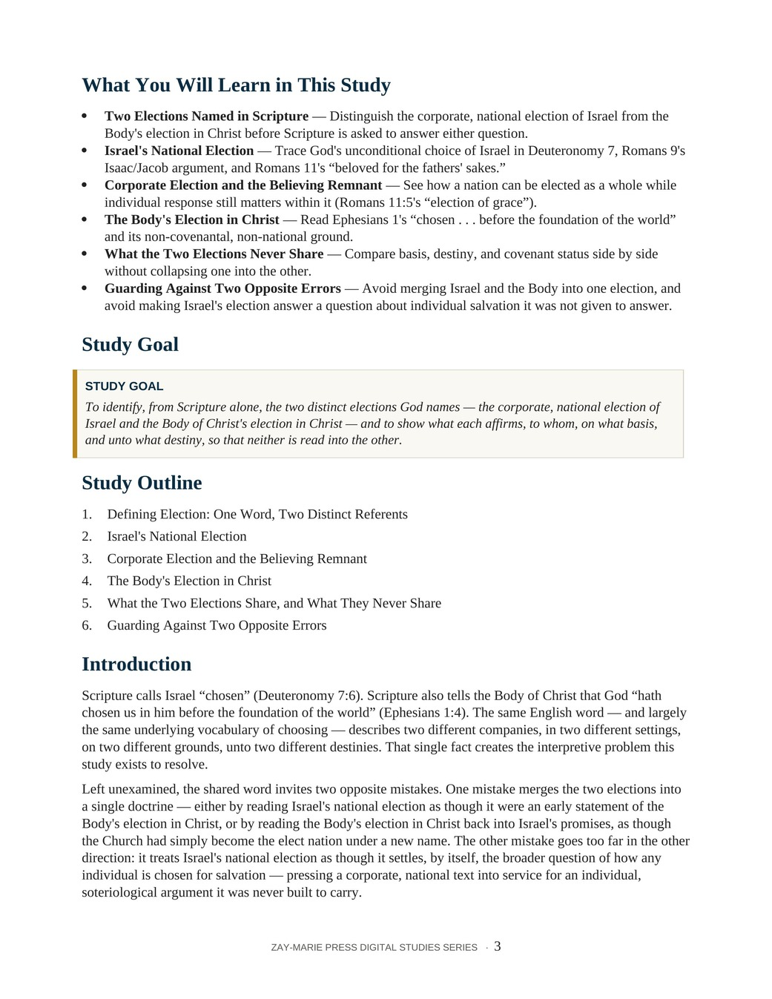
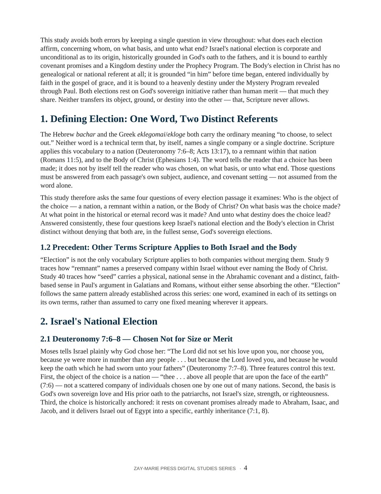

Election
Israel's National Election and the Body's Election in Christ
A Biblical Examination of Two Distinct Elections Under the Prophecy and Mystery Programs
Scripture calls Israel "chosen" (Deuteronomy 7:6), and it tells the Body of Christ that God "hath chosen us in him before the foundation of the world" (Ephesians 1:4). The same English word — and largely the same underlying vocabulary of choosing — describes two different companies, in two different settings, on two different grounds, unto two different destinies. Left unexamined, that single shared word invites two opposite mistakes.
This study traces Israel's national election from Deuteronomy 7 through Romans 9–11's corporate argument and Jeremiah 31's guarantee of the nation's future, and the Body's election in Christ from Ephesians 1's "before the foundation of the world" through Romans 8's unbroken chain of divine action. It tests the passage most likely to be misread alongside them — 1 Peter 1:1–2 — and names the two opposite errors a careful reader must avoid on either side.
Two Distinct Elections, Read on Their Own Terms
Scripture applies its vocabulary of choosing to a nation (Deuteronomy 7:6–8), to a believing remnant within that nation (Romans 11:5), and to the Body of Christ (Ephesians 1:4). The word itself only ever tells the reader that a choice has been made — it does not say who was chosen, on what basis, at what point, or unto what destiny. Those four questions must be answered from each passage's own setting. Asked consistently, they keep Israel's national election and the Body's election in Christ distinct without denying that both are, in the fullest sense, God's own sovereign elections.
This is not a general study of Israel's remnant, which Study 9 traces in its own right, nor of the judicial suspension that presently governs Israel's corporate unbelief, which Study 21 examines fully, nor of the broad Israel–Body distinction itself, which Study 4 establishes across every point of contrast. Its task is narrower: to ask, of every election passage in view, who is the object of the choice, on what basis, at what point, and unto what end — and to test that method against the one passage most likely to blur the two elections together, 1 Peter 1:1–2.
How These Studies Relate
Study 50 traces the two elections Scripture names — Israel's national election and the Body's election in Christ — and the discipline that keeps a shared word from becoming a shared doctrine.
Study 9 — The Remnant Compare the corporate, national election traced here with the narrower "election of grace" this study locates within it — an individual outworking, not a separate election.
Study 21 — Israel's Judicial Blinding See the national judicial suspension examined in full — the present, corporate condition this study calls on to show why Israel's unbelief never revokes her ongoing election.
Study 4 — Israel and the Body of Christ Read the broad Israel–Body distinction in origin, covenant, and destiny that this study's narrower question about election depends on throughout.
Trace the Object, the Basis, and the Destiny of Each Election
One Word, Two Referents
See why "chosen" alone never settles who is in view — the object, basis, timing, and destiny must come from each passage's own setting.
Israel's National Election
Trace God's unconditional choice of Israel in Deuteronomy 7, Romans 9's Isaac/Jacob argument, and Romans 11:28–29's "beloved for the fathers' sakes."
Corporate Election and the Believing Remnant
See how a nation can be elected as a whole while Romans 11:5's individual "election of grace" still operates within it.
The Body's Election in Christ
Read Ephesians 1's "chosen . . . before the foundation of the world" and its non-covenantal, non-national ground.
What the Two Elections Never Share
Compare object, basis, covenant status, and destiny side by side without collapsing one election into the other.
Guarding Against Two Opposite Errors
Avoid merging Israel and the Body into one election, and avoid stretching Israel's election to answer a question about individual salvation it was not given to answer.
Examine the Passages for Yourself
Deuteronomy 7:6–8
Israel chosen not for size or merit, but for God's own love and His oath to the fathers.
Romans 9:6–13
Isaac and Jacob chosen before either was born — a corporate, historical argument, not a proof text for individual salvation.
Romans 11:28–29
Beloved for the fathers' sakes — the gifts and calling of God are without repentance.
Ephesians 1:3–6
Chosen in Him before the foundation of the world — no genealogical or national referent at all.
Ephesians 1:11–12
Predestinated according to His purpose, obtained by those who first trusted in Christ.
Romans 8:28–30
The unbroken chain from foreknowledge to glory — every verb belongs to God.
2 Thessalonians 2:13–14
Chosen to salvation through belief of the truth, called by the gospel Paul preaches.
1 Peter 1:1–2
"Elect according to foreknowledge" — addressed to Israel's own dispersion, not a third statement of the Body's election.
The Word Is Not the Test
"According as he hath chosen us in him before the foundation of the world, that we should be holy and without blame before him in love" (Ephesians 1:4).
Paul locates this election "in him," before time began — not in a family, not in a nation, not in a covenant sworn within history. Israel's own election, sworn to Abraham's line, is no less real for being different; it is simply not this one. The single word "chosen" is not the test. Where, when, and unto what a choice was made — asked of each passage on its own terms — is.
Preview the Study Before You Purchase
Click any page to enlarge it for reading.
{kind=link}
{kind=link}

What You Will Learn
See the study's goal, outline, and the question it sets out to answer.
{kind=link}

Defining Election
See how the study opens its argument from the Hebrew and Greek vocabulary of choosing itself.
A Focused Study Built for
Understanding and Teaching
14-Page In-Depth Biblical Study
A careful study of Israel's national election and the Body's election in Christ, grounded in Deuteronomy, Romans, Ephesians, and 1 Peter.
6 Core Teaching Sections
Progress from the shared vocabulary of choosing through both elections to the two opposite errors a careful reader must avoid.
Key Distinctions to Retain
Keep the object, basis, covenant status, and destiny of each election clear.
Review and Discussion Questions
Test the study's distinctions concerning basis, timing, and destiny.
Teaching Outline
A structured framework for teaching both elections with precision.
Guided Further Study
Return to Israel's election, the Body's election, and the discipline of audience, each traced further with directed questions.
Scripture-Tracing Exercise
Trace the study's key passages across the Law, the Prophets, the Gospels, and Paul's letters in their own context.
Final Synthesis Exercise
Bring the evidence together in one coherent, Scripture-based explanation.
Election
14-page digital PDF · For personal use
Want More Than a Focused Study?
Digital Studies examine particular biblical subjects and difficult passages. The 40-lesson Biblical Hermeneutics course teaches a complete, repeatable method for establishing meaning in context, determining proper assignment, and making responsible application.